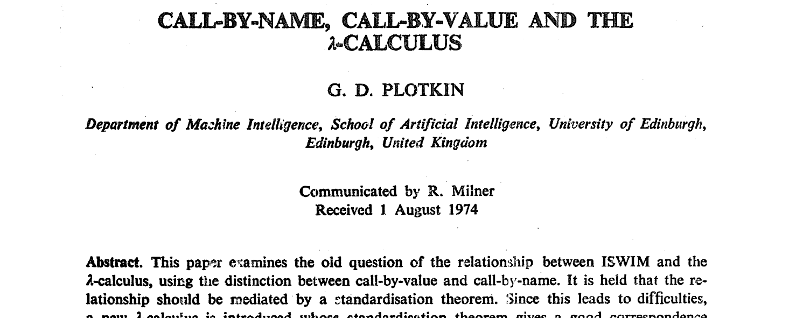

Les fonctions (récursives) décortiquées
Frédéric Cabestre
@fcabestre
I'm not a number, I'm a freelance.— Number 6, The Prisoner
Programmation Structutrée

Théorie
« Un jour j'irai vivre en Théorie,car en Théorie tout se passe bien. »— Pierre Desproges
λ-Calcul
$x$
Variable
$\lambda x.\,M$
Abstraction
$M\,N$
Application
$\lambda x.\,M[x] \rightarrow \lambda y.\,M[y]$
$\alpha$-conversion
$(\lambda x.\,M)\:E \rightarrow M[x:=E]$
$\beta$-reduction
$\lambda x.\,(f\,x) \rightarrow f$
$\eta$-reduction
λ-Calcul
$x$
Variable
$\lambda x.\,M$
Abstraction
$M\,N$
Application
$\lambda x.\,M[x] \rightarrow \lambda y.\,M[y]$
$\alpha$-conversion
$(\lambda x.\,M)\:E \rightarrow M[x:=E]$
$\beta$-reduction
$\lambda x.\,(f\,x) \rightarrow f$
$\eta$-reduction
Encodages
Entiers :
$0 = \lambda f.\, \lambda x.\,x$
$1 = \lambda f.\, \lambda x.\,f\,x$
$2 = \lambda f.\, \lambda x.\,f\,(f\,x)$
$S = \lambda n.\,\lambda f.\,\lambda x.\,f\,(n\,f\,x)$
Point fixe :
$Y = \lambda g.\,(\lambda x.\,g\,(x\,x))\,(\lambda x.\,g\,(x\,x))$
Curryfication
(ou Schönfinkelification ?)
public static int Add(int x, int y) => x + y;
Add(42, 19) // -> 61
public static Func<int, int> AddCurried(int x) => y => x + y;
AddCurried(42)(19) // -> 61
var addPartial = AddCurried(42);
addPartial(19) // -> 61
Sémantique
Donner un sens aux expressions syntaxiques
d'un langage dans un autre langage
Plus ou moins formelle
Plus ou moins abstraite
Axiomatique, Dénotationnelle, Opérationnelle
Dénotationelle
$\langle 2 + 1 \rangle \neq \langle 1 + 2 \rangle$
$\lceil\langle 2 + 1 \rangle\rceil$
$\lceil\langle 2 \rangle\rceil$ $+$ $\lceil\langle 1 \rangle\rceil$
$2 + 1$
$3$
$\lceil\langle 1 + 2 \rangle\rceil$
$\lceil\langle 1 \rangle\rceil$ $+$ $\lceil\langle 2 \rangle\rceil$
$1 + 2$
$3$
Opérationelle
$\{\varnothing\} \;\Uparrow\; \lceil\langle 2 + 1 \rangle\rceil$
$\{$ 2$\,\centerdot\,$1 $\,\centerdot\,\varnothing\} \;\Uparrow\; \lceil\langle + \rangle\rceil$
$\{$ 3 $\,\centerdot\,\varnothing\} \;\Uparrow\; \lceil\langle \rangle\rceil$
$\{\varnothing\} \;\Uparrow\; \lceil\langle 1 + 2 \rangle\rceil$
$\{$ 1$\,\centerdot\,$2 $\,\centerdot\,\varnothing\} \;\Uparrow\; \lceil\langle + \rangle\rceil$
$\{$ 3 $\,\centerdot\,\varnothing\} \;\Uparrow\; \lceil\langle \rangle\rceil$
Ordre de réduction
Si on pose :
$id = \lambda x.\,x$
Soit l'expression :
$id\,(id\,(\lambda z.\,id\, z))$
On a les redex :
$id\,(id\,(\lambda z.\,\underline{id\, z}))$
$id\,(\underline{id\,(\lambda z.\,id\, z)})$
$\underline{id\,(id\,(\lambda z.\,id\, z))}$
β-réduction complète
On prend n'importe quel redex
$id\:(\underline{id\:(\lambda z.\:id\: z)})$
$id\:(\lambda z.\:\underline{id\: z})$
$\underline{id\:(\lambda z.\: z)}$
$\lambda z.\: z$
Ordre normal
On prend redex le plus extérieur et le plus à gauche
$\underline{id\:(id\:(\lambda z.\:id\: z))}$
$\underline{id\:(\lambda z.\:id\: z)}$
$\lambda z.\:\underline{id\: z}$
$\lambda z.\: z$
Appel par nom
On prend redex le plus extérieur et le plus à gauche
mais sans descendre dans les abstractions
$\underline{id\:(id\:(\lambda z.\:id\: z))}$
$\underline{id\:(\lambda z.\:id\: z)}$
$\lambda z.\:id\: z$
Exemples : Algol60, Miranda, Lazy ML, Clean... Haskell
Appel par valeur
On prends le redex le plus extérieur quand son argument est une valeur
$id\:(\underline{id\:(\lambda z.\:id\: z)})$
$\underline{id\:(\lambda z.\:id\: z)}$
$\lambda z.\:id\: z$
Exemples : tous les autres langages !
Equivalence
OCaml

OCaml
OCaml
Interlude
Pratique
« En théorie, il n'y a pas de différence entre la théorie et la pratique.Mais en pratique, il y en a une. »— Yogi Berra
Commençons simple...
let square x = x * x
Arguments passés à la fonction (valeur associée x)
Les variables locales
Les résultats de calculs intermédiaires (par exemple x * x)
Le point (l'adresse) de retour
Qui a pensé au mot pile... ou stack pour les anglophiles ?
FORTRAN
FORmula TRANslator publié en (avril 1957 - John Backus)
F66 apparition de SUBROUTINES et FUNCTION (mars 1966)
Allocation statique à côté du code de la fonction
Plusieurs instances de la même fonction ?
F77 récursivité officieuse (avril 1978)
F90 récursivité officielle, RECURSIVE (standard ANSI 1992)
Récursion simple
Un cas de base ou cas d'arrêt
Un cas général définit au rang $n$ en fonction du rang $n - 1$
let rec Fact = function
| 0 -> 1
| n -> n * Fact (n - 1)
Récursion mutuelle
Plusieurs fonctions récursives se définissent
les unes part rapport aux autres
type Peano = Zero | Succ of Peano
let rec IsEvenPeano =
function
| Zero -> true
| Succ n -> IsOddPeano n
and IsOddPeano =
function
| Zero -> false
| Succ n -> IsEvenPeano n
Mise en œuvre
Plusieurs instances ou activations d'une même fonction
Enregistrement d'activation
... Ou activation frame
... Ou activation record
Crée à l'activation
Plus utile à la désactivation
$\Rightarrow$ Pile
Mise en œuvre
Fact 2
Fact 1
Fact 0
Fact 1
Fact 2


RISC
Reduced Instruction Set Computer
IBM 801 (1975-1980)
David Paterson à Berkeley
Dec Alpha, IBM POWER, Motorola 88000... (1980 et après)
RISC-V
Moins d'instructions plus simples
Plus de registres généraux
Appel terminal
L'appel récursif est la dernière action
effectuée dans la fonction
let rec FactTailRecursive acc = function
| 0 -> acc
| n -> FactTailRecursive (n * acc) (n - 1)
Compiler Explorer

Trampoline
public sealed interface TailRec<T> permits Suspend, Return {
default T run() {
...
}
}
public record Return<T>(T value) implements TailRec<T> {}
public record Suspend<T>(Supplier<TailRec<T>> thunk) implements TailRec<T> {}
public static TailRec<Integer> factTrampoline(int n, int acc) {
if (n == 0)
return new Return<>(acc);
else
return new Suspend<>(() -> factTrampoline(n - 1, n * acc));
}
Trampoline
factTrampoline(3, 1).run()
public sealed interface TailRec<T> permits Suspend, Return {
default T run() {
var current = this;
do {
switch (current) {
case Return r: return (T) r.value;
case Suspend s: current = (TailRec<T>) s.thunk.get();
}
} while (true);
}
}
Coda
Ressources

Ressources
Frédéric Cabestre
@fcabestre